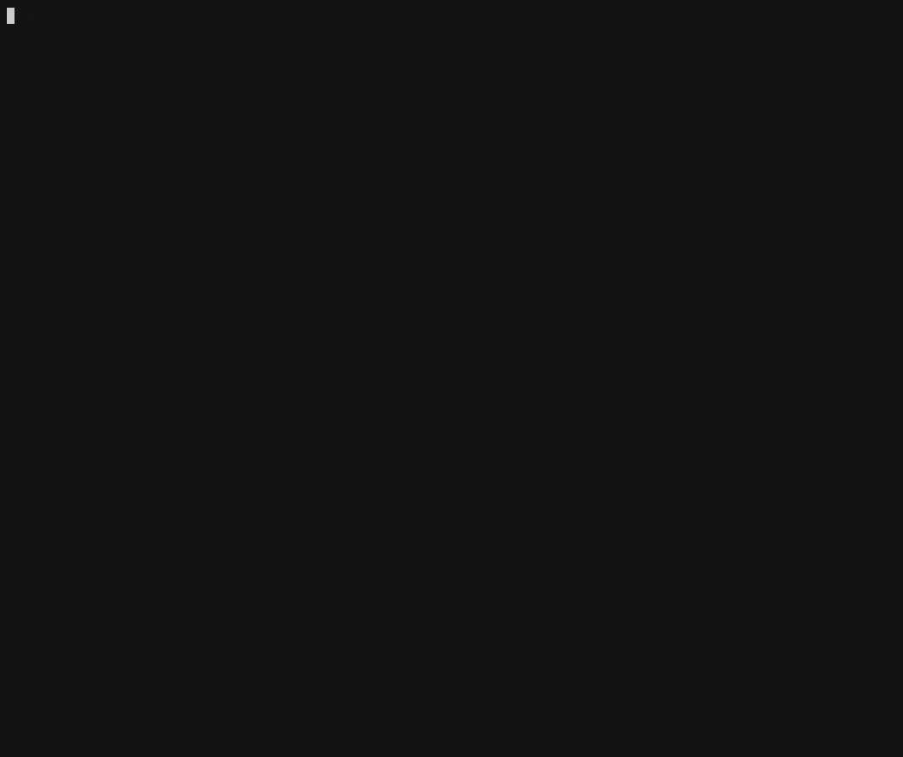
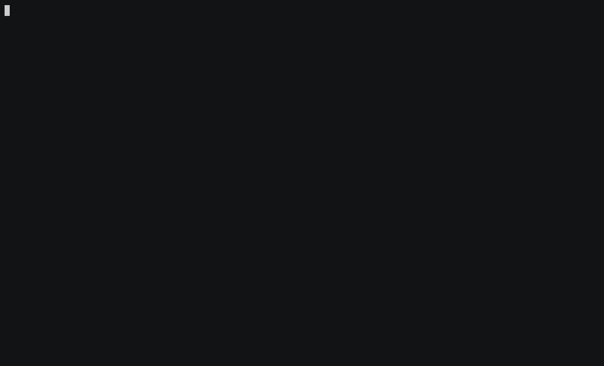
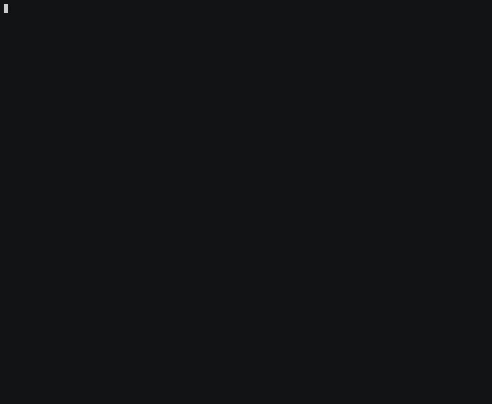
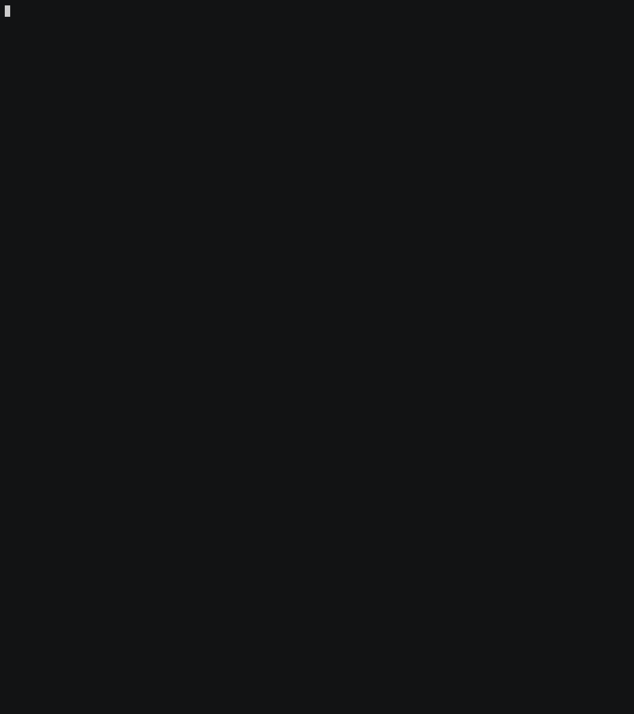
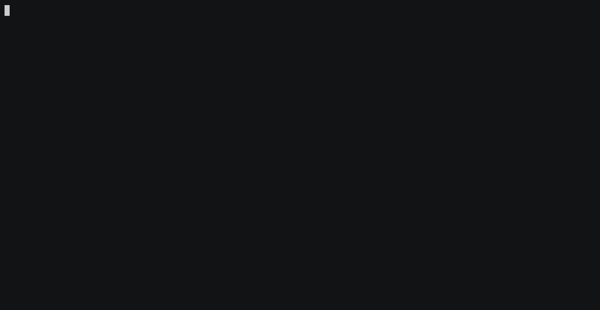
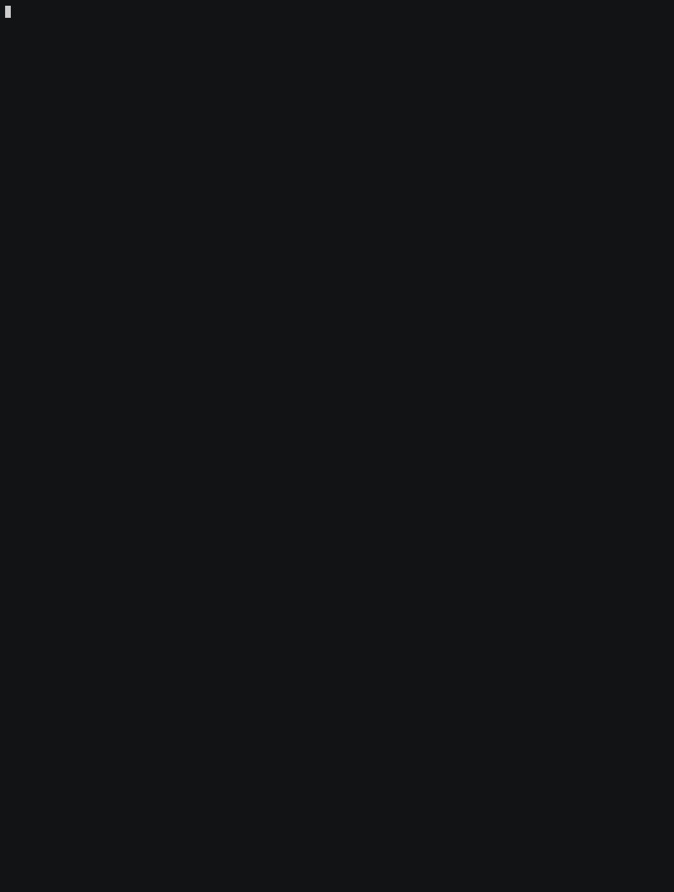
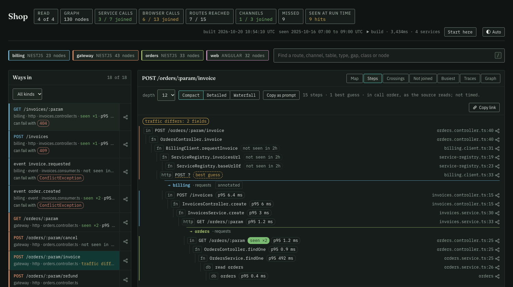
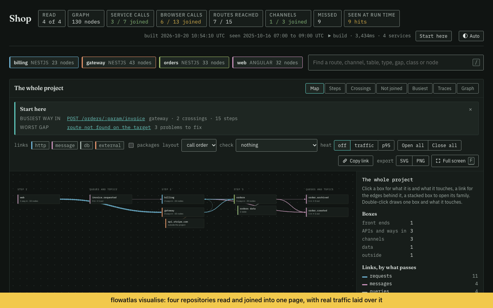
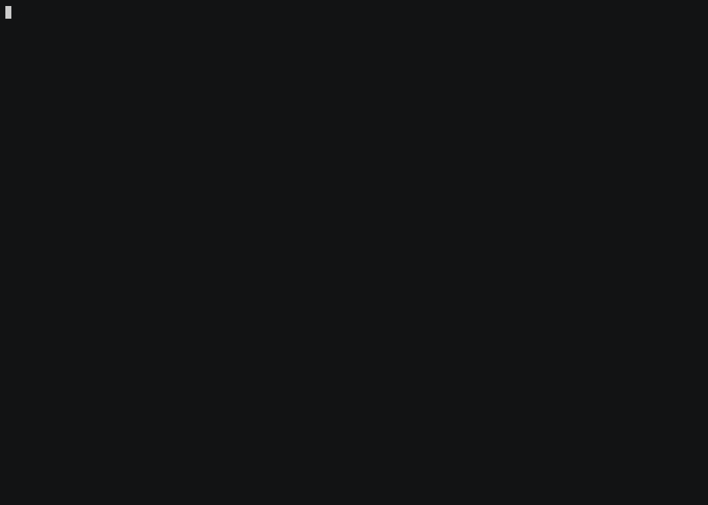

flowatlas · a walkthrough in eleven steps
A command-line tool that reads several TypeScript repositories with the compiler's own checker, without running them, and joins them into one graph you can query — from a terminal or from a coding agent. It knows NestJS and Angular, React and Next.js, SvelteKit and Remix, Express, Fastify, Koa and Hono, Medusa, tRPC and Telegraf; AWS Lambda, API Gateway, Step Functions, EventBridge, SQS and SNS as Terraform deploys them; TypeORM, Prisma, Drizzle, Mongoose, Sequelize, Kysely, Knex, MongoDB and node-postgres; Redis, Kafka, RabbitMQ, BullMQ and socket.io — and it can join to a service it cannot read at all, from its OpenAPI or AsyncAPI document.
A request made in one service is matched to the route that
answers it in another, a message published in one to whatever handles it, a
button in a browser to the endpoint it calls. madge,
dependency-cruiser and nx graph draw the imports
inside one repository, which is what a compiler already sees. This joins the
repositories. If your project is one repository, you do not need it.
npm install -g @flowatlas/cli
flowatlas init --dir . # find the repositories under here
flowatlas build # read them all and join themNode 22.12 or later. Nothing is sent anywhere: the graph, the traces it is given and the page it writes stay on your machine.
what it reads
fetch, axios, a wrapper or a client class of your own — each joined to the route that answers itdiff: a verdict, and every changed flow as a sequence diagramcheck --env: can this be deployed against what an environment runsrules: who may call, write, publish to or consume whatspec and export: OpenAPI, AsyncAPI, Backstage and Structurizr from the graphEvery shape above is held by a fixture — a small repository written to prove it, compared on every push. The fixtures page lists all of them.
measured on the demo project
The demo project is
fixtures/multi-repo,
the same one the walkthrough below is recorded against: four repositories,
three NestJS services and an Angular frontend, with a shared package of types
between them. It is synthetic, written for the test suite, and holds every
kind of join exactly once, including the ones that fail, so the figures are
small and the rows that did not join are there on purpose. Anyone can
rebuild them from a checkout; the README has the commands.
The third figure is the one that matters. Twelve
connections that no compiler in any of those four checkouts can see,
because each one only ever reads its own. 104 of the edges were read from
the code, 5 were inferred and marked heuristic, and 5 were
declared by an annotation. Every edge says which of the three it is.
Measured with 0.6.0.
| HTTP routes | 15 |
| message handlers | 2 |
| routes something in the project reaches | 7 |
| routes nothing it can see calls | 8 |
| browser requests matched to their route | 4 → 6 / 13 |
| calls between services matched | 3 → 3 / 7 |
| routes something reaches | 6 → 7 |
| edges across a repository boundary | 10 → 12 |
| contract errors, over 7 boundaries | 0 |
| names declared more than one way | 1 |
| channels handled nowhere | 1 |
| front-end requests for a route nothing serves | 2 |
| gaps and findings to act on | 11 |
| places the reader missed, and findings | 9 + 4 |
| of those, places static reading cannot reach | 2 |
| edges inferred, and marked so | 5 |
The first column is what a first build gives you. The
configuration behind the second, the fixture's own, says which settings key
addresses a service, where a frontend's key points and which package holds
the shared types: a string in one repository and a route in another are
joined by a fact only the person who deployed them knows, and
flowatlas doctor names each with the line that wants it. The
four calls that stay unjoined are the fixture's deliberate ones.
Nothing in that last table is dropped or rounded away.
Each row carries a file, a line, a reason and the one thing to change.
flowatlas stats prints these figures for your own project, and
flowatlas doctor prints the list behind them.
The rest of this page is a walkthrough, recorded against
fixtures/multi-repo,
the demo project measured above: four services that do not share a
repository, small enough to read in a sitting, and already carrying the
kinds of problem a real project has. A scene is a shell script, so what is on screen is
what actually ran.
Put yourself in a directory with the repositories under it, or beside them,
and run init. It reads each manifest, works out the name and the
kind, and writes flowatlas.config.json. It also registers the
graph server in every repository, so an agent working in any one of them can
ask about all of them.
npm install -g @flowatlas/cli
flowatlas init # find the repositories and ask
flowatlas init --dir . # look under this one, not beside itflowatlas init with no --dir scans the
parent directory, which is what you want when the configuration
lives inside one of the repositories, and not what you want when it lives
above them.
build reads every repository in its own process and joins the
readings. A first build is rarely all green, and it is not supposed to
be.
Three of the seven calls between services joined; one goes to
PAYMENTS_URL, which no service claims. Four of thirteen
browser requests found their route. The last line counts what is left:
missed places the reader could not join, notes
on joins it made from a name alone, and findings about the
code itself. Nothing was guessed; all of it was recorded, with a file and a
line.
doctor turns those counts into a list of things to do,
grouped by cause. Every row names the reason, the file, the line, the call,
and what to change.

It names the repository that is probably missing — something
called payments, from the one setting nobody claims. Three
browser calls could go to two services, so it asks which one the
frontend's apiUrl names. And ORDERS_URL was
joined to orders only because of its name, which is kept as a
note until the configuration says so outright.
flowatlas doctor --reason <code> # one kind of gap
flowatlas doctor --missing # the repository missing
flowatlas accept route-unguarded --service orders
flowatlas doctor --strict # exit 1 past the baselineTwo settings join two more browser requests, reach one more route, and turn both notes into facts.
baseUrlEnv says which settings keys other services use to address a service. Without it, a key named after a service is still joined to it, and doctor keeps a note saying only the name chose it; a key named after nothing is joined to nothing. apiTarget does the same for a browser, saying which service a frontend's settings key points at.

| first build | after two settings | |
|---|---|---|
| calls between services linked | 3 of 7 | 3 of 7 |
| browser requests joined to a route | 4 of 13 | 6 of 13 |
| routes something reaches | 6 | 7 |
| places missed · notes | 11 · 2 | 9 · 0 |
What survives is no longer missing configuration. It is the project disagreeing with itself, which is the thing worth knowing.
flow takes any way in and follows it until it stops.

The first trace starts at a (click) in an Angular template
and ends at a row in a table in a different repository, crossing two
service boundaries on the way, with unresolved on this path: 0
to say nothing along it was guessed.
The second shows the other case. BillingClient builds its
address at run time from a registry, so nothing can be read from the
source; an annotation on the method declares where it goes, and the edge
is recorded with confidence: marker rather than
static, so it is always clear which edges were told rather
than found.
The second also shows billing calling back into orders for the order it invoices: three repositories again, one of them twice.
An entry can be named however you would say it aloud. These three are the same route:
flowatlas flow "POST /orders/12345/archive"
flowatlas flow "POST /orders/:param/archive"
flowatlas flow "entry:orders:http:POST:/orders/:param/archive"impact starts at a symbol and walks backwards to every way in
that reaches it. Give it a table and it tells you which routes would have
to be retested.

hotspots ranks what the most things point at, and
channel shows both ends of a message channel — here
order.created, published in orders and handled in billing,
whose handler calls back into orders for the order it was told about.
Two services agree about a shape until one of them changes.
contracts compares what each side of every crossing declares,
field by field.

No boundary in the demo disagrees, and the unchecked list
is why that is worth believing: it says which boundaries could not be
compared and what to do about each — a literal where a typed value
would do, a call that says nothing about what it expects back —
rather than reporting them as agreement.
types --drift finds what a compiler in one checkout never
can: InvoiceDto declared one way in billing and another in
the gateway, and OrderDto in the shared package and again in
the web app. contracts compares the two field by field.

dead is the one to read carefully. It says so itself: nothing
in it is proof, every row is a heuristic with the reason it fired
attached.
visualise writes one self-contained page: no server, nothing
to fetch, nothing to install. It opens on a Map of the services, lists
every way in, and follows any one of them across service boundaries,
marking each crossing with what it was joined by and how much to trust
it.

It is a report you can click, not a viewer you keep running. Attach it to a review, or keep it beside a decision.
It opens on a Map: one box per service, queue, table and outside host, laid out in the order a request travels, joined by what passes between them and counted. A check marks what to look at — routes nothing calls, channels with one end, services that reach each other — and, once traces are laid over it, a heat colours each link by its traffic or its p95. Start here offers the busiest way in and the worst gap.
Steps shows one way in as a list in call order: each
table, address and channel inline, calls side by side or once per item of
a loop, what it can fail with, and — where traffic went through
— how often it ran and how long it took; Waterfall draws the
same steps on a time axis. Copy as prompt hands it to an
assistant as Markdown. Not joined lists what did not
join, grouped by cause, with the risks found in the code and what was
accepted. Busiest ranks the methods most things lean on,
Traces draws real requests one by one, and the
Graph tab shows any node with what it takes and gives
back, each type opened field by field. --diff <ref>
adds Changes and --observed-diff adds
Run time changes. One search box above the tabs finds a
route, channel, table, type, gap or class, and goes to it.

The page above is the demo project with its sample traces laid over it
(scene 10): scripts/demo/page-project.sh builds it and
scripts/demo/page-tour.mjs takes the pictures.
diff builds the graph at two revisions and reports what moved
between them.
One route is renamed in the orders service. flowatlas names every way in
that reached it — the gateway route, billing's handlers and the
browser button above them, in repositories the change does not touch
— and shows each flow it cuts as the steps before and after, drawn
as a sequence diagram in the Markdown. The output is Markdown because its
destination is a pull request comment;
--fail-on-contract-break and
--fail-on-rule-break make it a build failure instead.
flowatlas diff main # this branch against main
flowatlas check --env production # safe to deploy there?
flowatlas rules # who may call whatEverything so far was read from code. observe adds what
real traffic did — from OpenTelemetry, Zipkin, Jaeger,
@nestjs/observe, a test run's HAR files or AWS logs — and lays it over
the map: how often each join ran, how long it took, how it answered.
A trace never draws an edge; what it shows that the code does not is
listed as a question.

Twenty-nine spans from three files: the joins they ran, the slowest ways in by p95, and three things traffic reached that no reader drew — a collection, a metrics route and a queue. One route answered 500 that nothing in its code says it can; doctor names it, and the page puts the same counts and timings on every step.
flowatlas observe test-results # a Playwright run's HAR files
flowatlas observe --listen # OTLP on 127.0.0.1:4318Run time in five minutes goes from an end-to-end test run to that picture.
init already registered the server in each repository. An
agent in any one of them gets the whole project over the Model Context
Protocol.
Twenty-six tools in all, and a session lists the ones its project can
answer: nineteen here, until traces are laid over it or rules are written
(flowatlas mcp --all-tools lists every one). Only one of them
returns source code. A trace never drags
in the body of every method along it; the agent asks the graph which name
to look at, then asks for that one name.
flowatlas mcp --install # register everywhere, merging
flowatlas mcp --install --dry-runAfter that, claude mcp list shows flowatlas.
docs/mcp.md is the whole thing: setup
for Claude Code, Cursor, VS Code and Claude Desktop, what each tool takes,
the order to call them in, and what to check when a client will not list
the server.